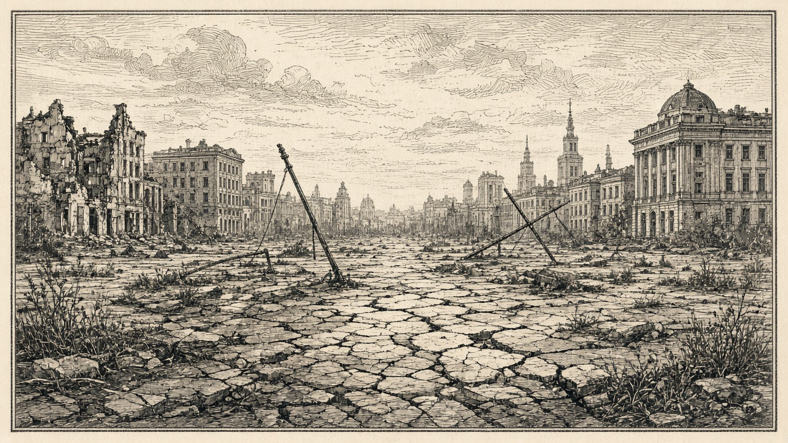
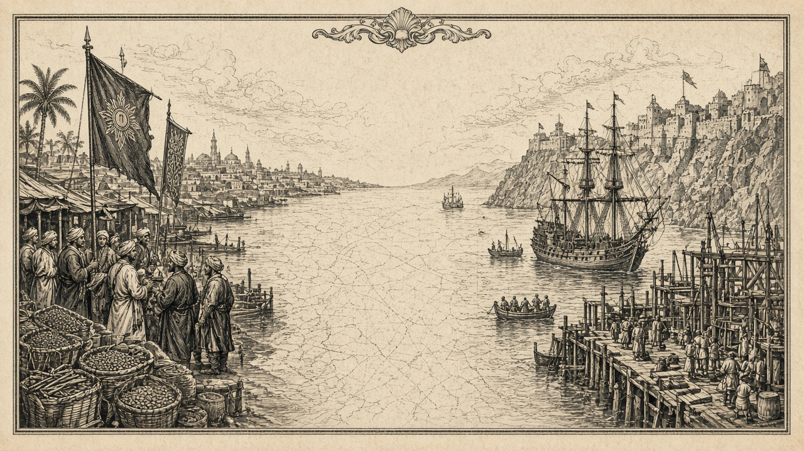
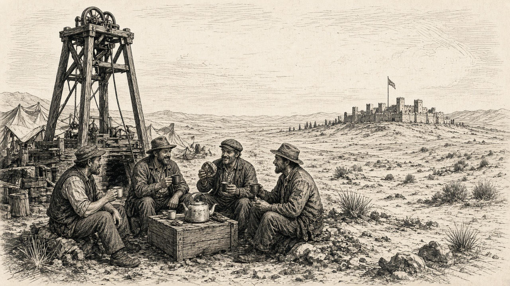

ブローヴィークが荒地に 胡椒はスルガと開戦 黄砂は停戦
第210・211期の合同号 現代都市が消え、長い北岸の戦争が終わり、香辛料の都が戦列へ

【総合部】本紙は第210期と第211期を合同号で報じる。二期の間に、蒼森辺境伯領では食料危機が再燃し、北岸では長年続いた戦争が停戦で終わった。第211期、蒼森辺境伯領の現代都市ブローヴィーク（17,9）が地図上で荒地になった。首都ブロースコーグ（20,10）は都市から町へ規模が下がり、食料は再びゼロ。同じ期、胡椒帝国とスルガの戦争が始まった。第210期にはオリョルッル王国と黄砂同盟が停戦合意で長い戦争を終えた。詳報は2〜4面。


カペレナ、藍岬の都市を占領 蒼森の荒地でも整地
第210期、カペレナ王国は藍岬共和国連邦の都市（82,22）を占領し、食糧四万六千三百トンを徴発した。公報損害は藍岬七千八百人、カペレナ九百人。第211期にはカペレナが蒼森辺境伯領の地点（21,11）で整地し、領有がカペレナ側へ移った。政府表明は「212までに改善が無い場合蒼森に特務作戦を行い無期限の占領を実行する」。桃谷とオリョルッルも第211期に停戦合意。火災は両期で四十六件・二十万七千六百人。国特集は9面の藍岬共和国連邦。